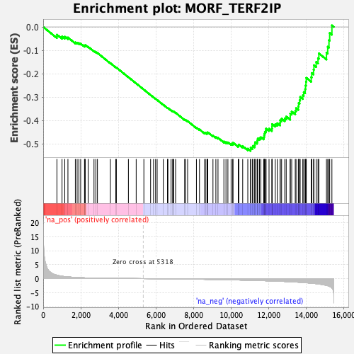
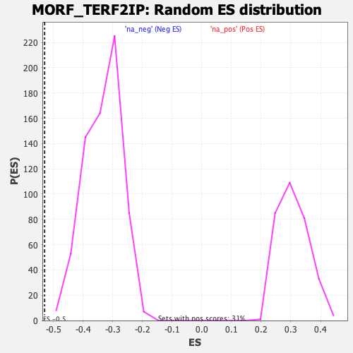

| | | Dataset | DE_genes |
| Phenotype | NoPhenotypeAvailable |
| Upregulated in class | na_neg |
| GeneSet | MORF_TERF2IP |
| Enrichment Score (ES) | -0.52959067 |
| Normalized Enrichment Score (NES) | -1.593348 |
| Nominal p-value | 0.0 |
| FDR q-value | 0.10889024 |
| FWER p-Value | 0.66 |
Table: GSEA Results Summary

Fig 1: Enrichment plot: MORF_TERF2IP
Profile of the Running ES Score & Positions of GeneSet Members on the Rank Ordered List
| PROBE | GENE SYMBOL | GENE_TITLE | RANK IN GENE LIST | RANK METRIC SCORE | RUNNING ES | CORE ENRICHMENT | | 1 | CAPZB | | | 731 | 1.228 | -0.0330 | No |
| 2 | CANX | | | 1003 | 0.854 | -0.0405 | No |
| 3 | TERF2IP | | | 1150 | 0.718 | -0.0415 | No |
| 4 | UBE2D3 | | | 1317 | 0.605 | -0.0451 | No |
| 5 | CNOT4 | | | 1712 | 0.427 | -0.0657 | No |
| 6 | PPP2CA | | | 1807 | 0.388 | -0.0672 | No |
| 7 | SUMO2 | | | 1900 | 0.354 | -0.0689 | No |
| 8 | SMNDC1 | | | 1995 | 0.328 | -0.0712 | No |
| 9 | TOR1AIP1 | | | 2200 | 0.266 | -0.0813 | No |
| 10 | CNPPD1 | | | 2222 | 0.261 | -0.0795 | No |
| 11 | KHDRBS1 | | | 2237 | 0.258 | -0.0774 | No |
| 12 | HNRNPH2 | | | 2393 | 0.229 | -0.0848 | No |
| 13 | ATXN2L | | | 2705 | 0.176 | -0.1029 | No |
| 14 | POLR2A | | | 2807 | 0.160 | -0.1076 | No |
| 15 | DNAJC8 | | | 2888 | 0.151 | -0.1110 | No |
| 16 | TAF9 | | | 3577 | 0.094 | -0.1547 | No |
| 17 | MKRN1 | | | 3865 | 0.078 | -0.1724 | No |
| 18 | SMC5 | | | 3897 | 0.076 | -0.1736 | No |
| 19 | CALM2 | | | 4537 | 0.039 | -0.2147 | No |
| 20 | COX7A2L | | | 4951 | 0.019 | -0.2414 | No |
| 21 | RAB1A | | | 5360 | -0.002 | -0.2679 | No |
| 22 | SMARCC2 | | | 5718 | -0.021 | -0.2909 | No |
| 23 | SEC61B | | | 5874 | -0.030 | -0.3006 | No |
| 24 | DENND4A | | | 5983 | -0.038 | -0.3072 | No |
| 25 | DRG1 | | | 6067 | -0.043 | -0.3121 | No |
| 26 | PRKRA | | | 6393 | -0.065 | -0.3325 | No |
| 27 | XPO6 | | | 6615 | -0.082 | -0.3459 | No |
| 28 | ZC3H15 | | | 6640 | -0.084 | -0.3464 | No |
| 29 | FBXO7 | | | 6808 | -0.096 | -0.3562 | No |
| 30 | METAP1 | | | 6894 | -0.102 | -0.3605 | No |
| 31 | CUX1 | | | 6910 | -0.103 | -0.3602 | No |
| 32 | KRAS | | | 6945 | -0.106 | -0.3612 | No |
| 33 | RAB11A | | | 7050 | -0.114 | -0.3666 | No |
| 34 | YWHAQ | | | 7531 | -0.154 | -0.3960 | No |
| 35 | RPS27A | | | 7573 | -0.159 | -0.3968 | No |
| 36 | PRKAG1 | | | 7689 | -0.170 | -0.4023 | No |
| 37 | NFATC2IP | | | 8158 | -0.214 | -0.4302 | No |
| 38 | DEK | | | 8320 | -0.231 | -0.4379 | No |
| 39 | PLIN3 | | | 8598 | -0.262 | -0.4528 | No |
| 40 | SMAD2 | | | 8632 | -0.265 | -0.4518 | No |
| 41 | CNP | | | 8719 | -0.276 | -0.4541 | No |
| 42 | AATF | | | 8725 | -0.277 | -0.4512 | No |
| 43 | EAPP | | | 8763 | -0.281 | -0.4503 | No |
| 44 | PWP1 | | | 9038 | -0.316 | -0.4643 | No |
| 45 | NUDT3 | | | 9193 | -0.334 | -0.4704 | No |
| 46 | TIAL1 | | | 9306 | -0.348 | -0.4735 | No |
| 47 | PHB | | | 9619 | -0.391 | -0.4892 | No |
| 48 | TFAP4 | | | 9731 | -0.408 | -0.4916 | No |
| 49 | PRKCSH | | | 9833 | -0.422 | -0.4931 | No |
| 50 | NUBP1 | | | 10003 | -0.447 | -0.4988 | No |
| 51 | ILF2 | | | 10089 | -0.460 | -0.4989 | No |
| 52 | COPS6 | | | 10105 | -0.462 | -0.4944 | No |
| 53 | CNBP | | | 10384 | -0.502 | -0.5065 | No |
| 54 | NACA | | | 10415 | -0.508 | -0.5024 | No |
| 55 | TBCC | | | 10621 | -0.541 | -0.5093 | No |
| 56 | SFSWAP | | | 10893 | -0.580 | -0.5201 | No |
| 57 | ZNHIT3 | | | 11040 | -0.604 | -0.5224 | Yes |
| 58 | NFYB | | | 11046 | -0.605 | -0.5155 | Yes |
| 59 | OTUB1 | | | 11144 | -0.626 | -0.5144 | Yes |
| 60 | TP53BP1 | | | 11162 | -0.629 | -0.5080 | Yes |
| 61 | KDM3B | | | 11262 | -0.649 | -0.5068 | Yes |
| 62 | CNOT1 | | | 11269 | -0.650 | -0.4994 | Yes |
| 63 | BECN1 | | | 11279 | -0.653 | -0.4923 | Yes |
| 64 | ROCK1 | | | 11386 | -0.675 | -0.4912 | Yes |
| 65 | CNOT2 | | | 11403 | -0.679 | -0.4841 | Yes |
| 66 | WWOX | | | 11421 | -0.683 | -0.4771 | Yes |
| 67 | KBTBD2 | | | 11515 | -0.702 | -0.4748 | Yes |
| 68 | CLSTN1 | | | 11587 | -0.717 | -0.4709 | Yes |
| 69 | MORC3 | | | 11737 | -0.749 | -0.4717 | Yes |
| 70 | BRD8 | | | 11763 | -0.754 | -0.4644 | Yes |
| 71 | HNRNPK | | | 11778 | -0.756 | -0.4563 | Yes |
| 72 | SRRT | | | 11798 | -0.762 | -0.4485 | Yes |
| 73 | AGPAT1 | | | 11849 | -0.772 | -0.4426 | Yes |
| 74 | RPRD2 | | | 11866 | -0.775 | -0.4344 | Yes |
| 75 | OARD1 | | | 12023 | -0.810 | -0.4349 | Yes |
| 76 | CHD8 | | | 12175 | -0.850 | -0.4346 | Yes |
| 77 | EIF4A2 | | | 12185 | -0.852 | -0.4251 | Yes |
| 78 | IK | | | 12187 | -0.853 | -0.4150 | Yes |
| 79 | SDR39U1 | | | 12355 | -0.891 | -0.4153 | Yes |
| 80 | FOXJ3 | | | 12462 | -0.919 | -0.4113 | Yes |
| 81 | ALDH4A1 | | | 12613 | -0.956 | -0.4097 | Yes |
| 82 | SH2B1 | | | 12617 | -0.958 | -0.3985 | Yes |
| 83 | CPSF4 | | | 12692 | -0.979 | -0.3917 | Yes |
| 84 | DRG2 | | | 12861 | -1.032 | -0.3904 | Yes |
| 85 | HNRNPH3 | | | 12938 | -1.057 | -0.3827 | Yes |
| 86 | RABAC1 | | | 13151 | -1.121 | -0.3832 | Yes |
| 87 | ARFGAP2 | | | 13152 | -1.121 | -0.3699 | Yes |
| 88 | GPAA1 | | | 13229 | -1.149 | -0.3612 | Yes |
| 89 | DNPEP | | | 13419 | -1.220 | -0.3590 | Yes |
| 90 | PARN | | | 13460 | -1.237 | -0.3469 | Yes |
| 91 | TPR | | | 13581 | -1.286 | -0.3394 | Yes |
| 92 | DHX38 | | | 13599 | -1.292 | -0.3252 | Yes |
| 93 | UBN1 | | | 13651 | -1.313 | -0.3129 | Yes |
| 94 | BRD3 | | | 13680 | -1.321 | -0.2990 | Yes |
| 95 | SNRNP200 | | | 13820 | -1.387 | -0.2916 | Yes |
| 96 | EIF4H | | | 13871 | -1.409 | -0.2781 | Yes |
| 97 | GNB5 | | | 13946 | -1.442 | -0.2657 | Yes |
| 98 | IST1 | | | 13967 | -1.455 | -0.2497 | Yes |
| 99 | STK38 | | | 13991 | -1.464 | -0.2338 | Yes |
| 100 | MFN2 | | | 14006 | -1.473 | -0.2172 | Yes |
| 101 | DYRK2 | | | 14268 | -1.645 | -0.2147 | Yes |
| 102 | CSNK1D | | | 14298 | -1.659 | -0.1969 | Yes |
| 103 | CYHR1 | | | 14393 | -1.713 | -0.1826 | Yes |
| 104 | HTATSF1 | | | 14414 | -1.724 | -0.1634 | Yes |
| 105 | NELFB | | | 14533 | -1.813 | -0.1495 | Yes |
| 106 | STK19 | | | 14631 | -1.905 | -0.1332 | Yes |
| 107 | DDB1 | | | 14676 | -1.943 | -0.1130 | Yes |
| 108 | SLC25A36 | | | 15080 | -2.434 | -0.1103 | Yes |
| 109 | NAP1L4 | | | 15147 | -2.539 | -0.0844 | Yes |
| 110 | SLC9A1 | | | 15214 | -2.702 | -0.0566 | Yes |
| 111 | B4GALT3 | | | 15252 | -2.792 | -0.0258 | Yes |
| 112 | RAF1 | | | 15370 | -3.364 | 0.0066 | Yes |
Table: GSEA details [plain text format]

Fig 2: MORF_TERF2IP: Random ES distribution
Gene set null distribution of ES for MORF_TERF2IP